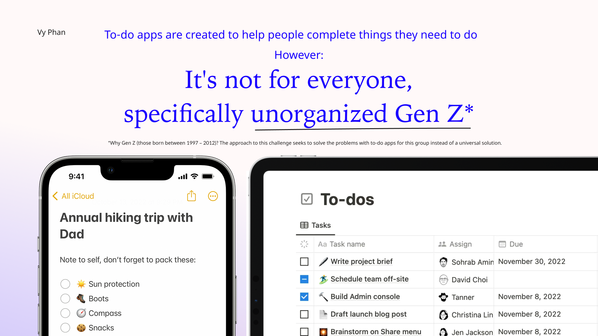
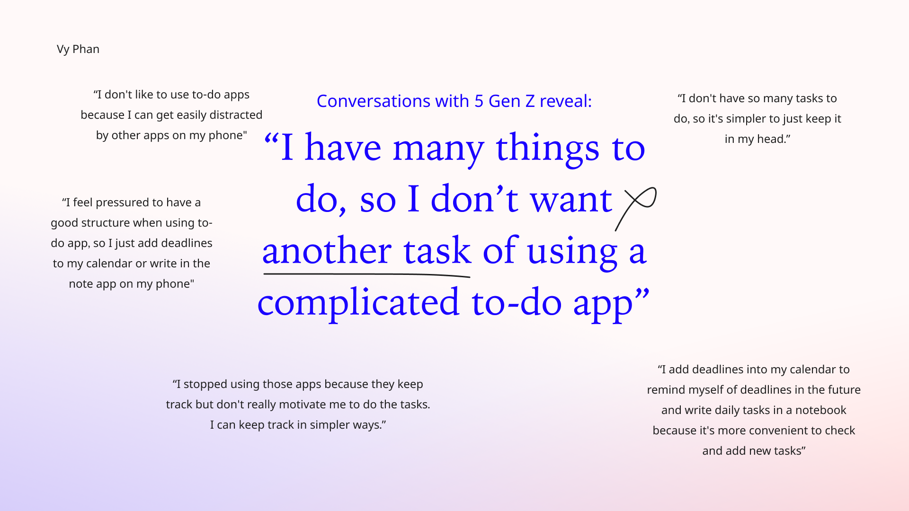
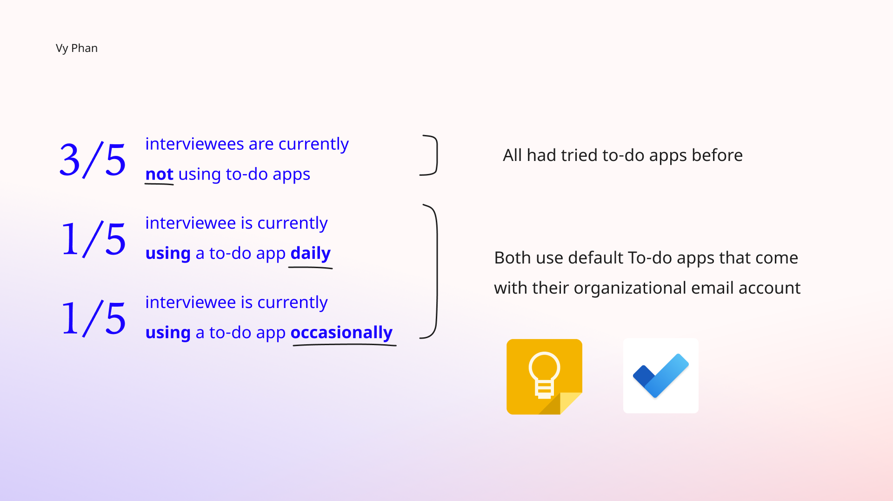
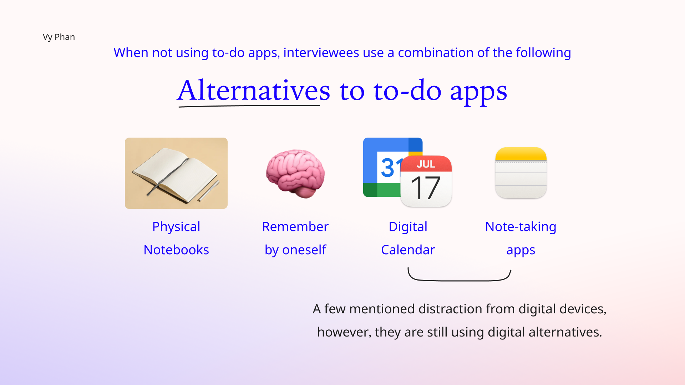
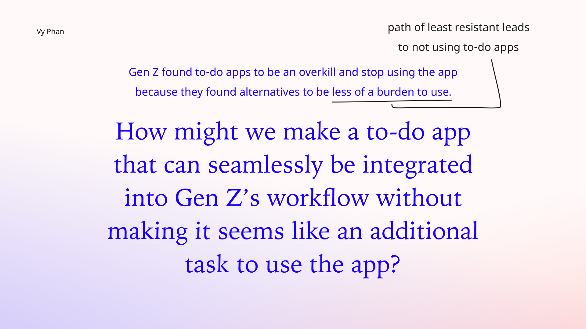
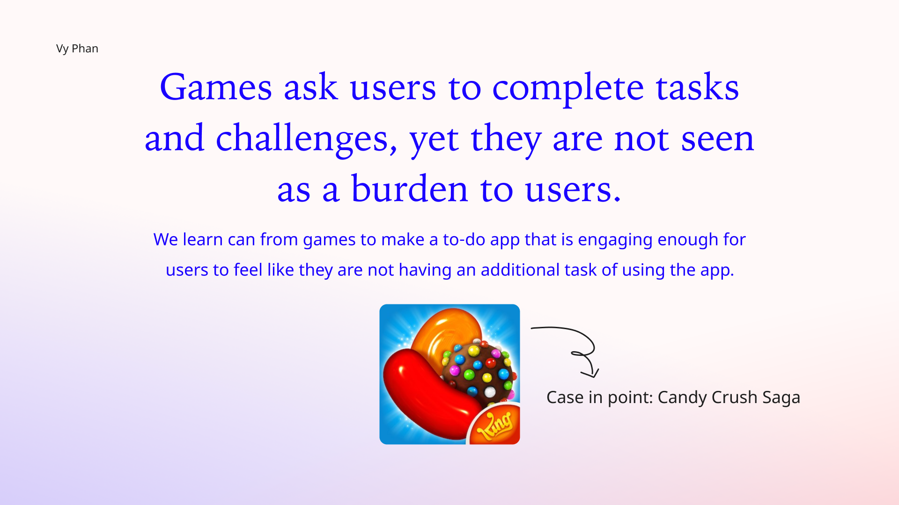
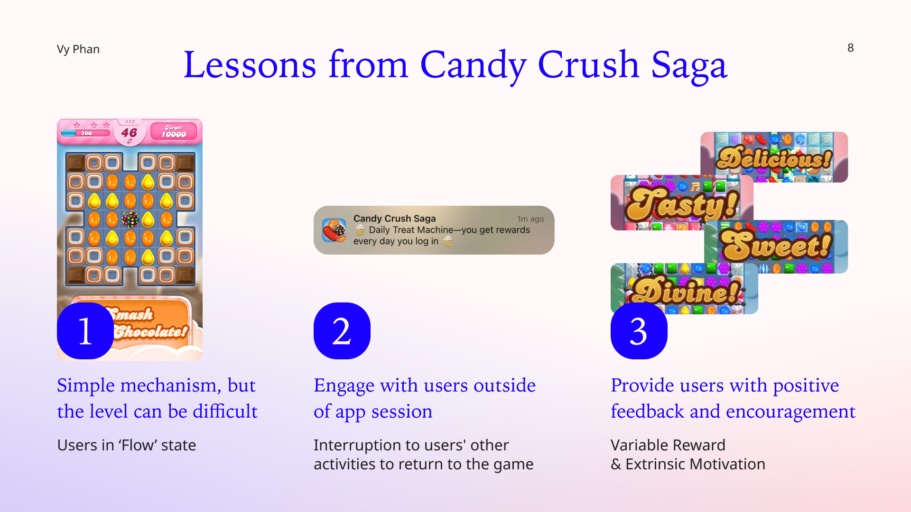
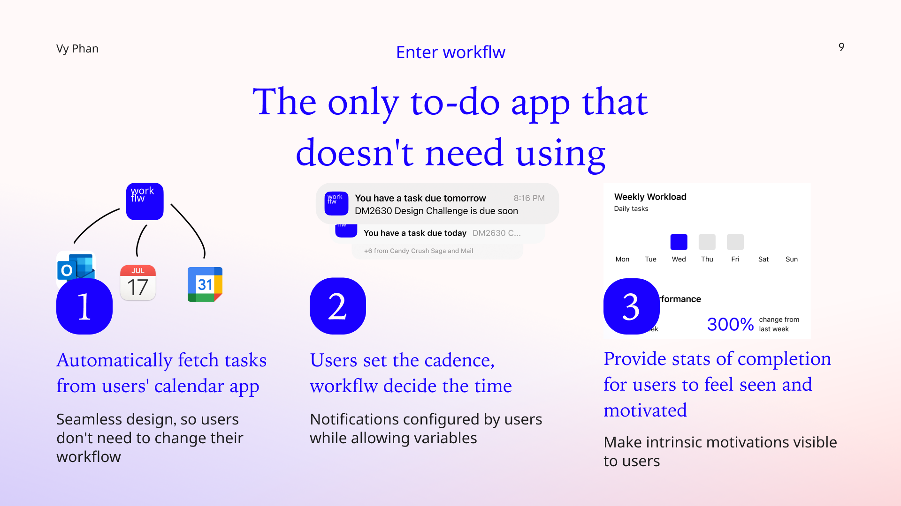
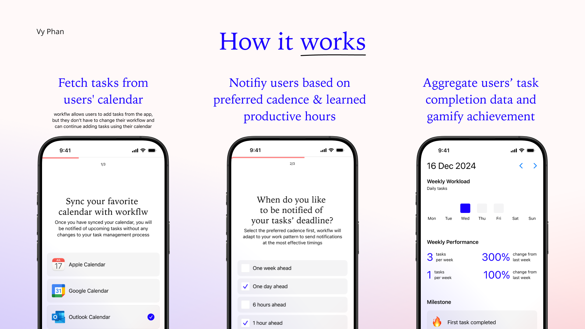
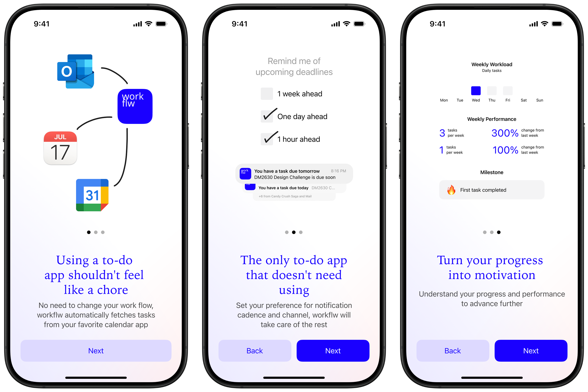

A User Engagement Take on The Classic To-do App
To-do apps should help people get things done, but maintaining one can feel like another task. I explored how gamification and UX design can make task management genuinely engaging and effective.

Problem Description
To-do apps are created to help people complete things they need to do, however, sometimes mantaining a useful to-do app can be seen as creating another task for users.

Research
I conducted 5 interviews with 5 GenZ between the ages of 20 to 25 to understand more about their pain points and needs:



Design Approach
After gaining a better understanding of the target users' pain points, their needs and current alternatives, I arrived at the following How-Might-We statement that guided the design process.

UX Design Theory: Gamification
Games are the best at engaging users, therefore, I looked toward one of the most engaging/addictive game on the mobile game market for wisdoms that could be applicable for the design of this to-do app.


Product Design
An aha! moment occured as I realized that the easiest way help users maintain the habits of using to-do app is to make it feel like they are not using the app at all. Reducing the time users spend on the app is the best way to keep the users.



Afterthoughts
Designing to-do app is a classic digital product design that I always enjoy working on, because its simplicity calls for creativity to create something new and different, yet at the same time remains simple in its core mechanism. Here's what I learned from this experience:
In an age when everything on your phone is trying to get you hooked and addicted to using them, I learned that a potential way to stand out is to design a mechanism that goes against this trend.
Integrating gamification principles into design has always been an important approach to designing engaging experience for digital products, and I am glad to be able to practice this in this project.